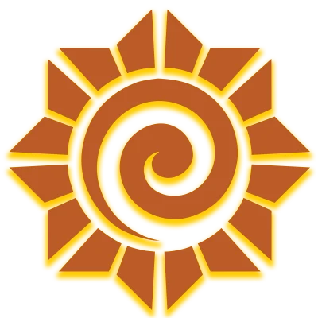
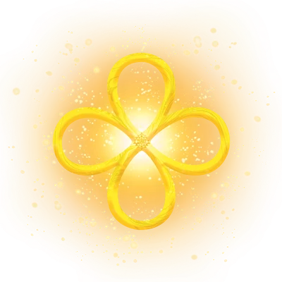
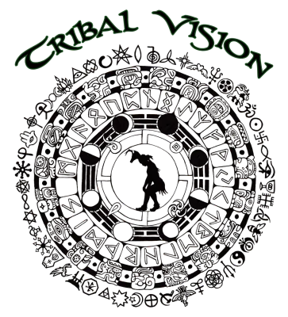
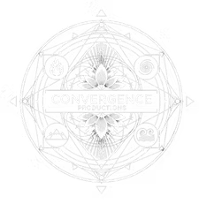
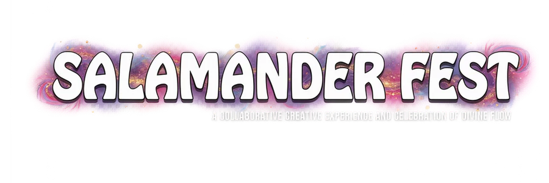
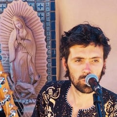
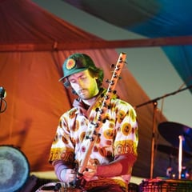
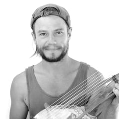
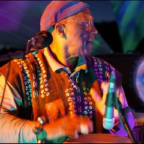

Why This Music Matters
This music is older than all of us. Born from the Donso hunter's tradition of West Africa, the kamale n'goni carries a healing resonance that has moved people to tears, to joy, and through profound transformation for centuries.
SANJI brings these ancient instruments into a contemporary context. Four artists channeling the deep-rooted power of the Kamale N'goni, djembe, and voice into something visceral and alive. Heavy roots. Super danceable. A bridge between tradition and the present moment.
Live
Stages Shared
- Bassekou Kouyaté
- Mamadou Diabate
- Sona Jobarteh
- Mokoomba
- Zar Electrik
- Biko Casini
- Snow Raven
Headlining & Main Stage Performances
-
Globalquerque
-
Crestone Energy Fair

-
Unison Festival

-
Tribal Vision Festival

-
Convergence Wellness Festival

-
Salamander Fest

The Band
Miles Anderson
Kamale N'goni · Lead Vocals · Dunun

Miles Anderson grew up in Albuquerque, NM. He started playing drumkit when he was 9. He has been around music from the African diaspora since he was a little boy. His parents are world music fans, and he remembers going to dance parties with Albuquerque legends Wagogo banda as a child and listening to Ali Farka Touré on road trips. He has been building, studying, and playing kamale n'goni for 10+ years. He has traveled and studied in Bobo Dioulasso, Burkina Faso. His teachers include Arouna Diarra, Tani Diakite, and Siakka Diarra.
Rob Usher
Kamale N'goni · Djembe · Karinyan · Calabash

From the moment Rob Usher first picked up the kamale n'goni, he knew it was something he would follow for the rest of his life. Over the past 15 years, that first recognition has grown into a deep commitment to the study of traditional kamale n'goni music, shaped by long practice, close listening, and guidance from teachers including Mamadou Sidibe. His playing reflects both a broad technical range and a deep relationship to traditional repertoire, carried with care, discipline, and respect for the lineage. At the center of it is a simple devotion to the instrument itself: each time he holds the n’goni, he returns to the same joy and peace that first called him to it.
Mitchell Olson
Kamale N'goni · Calabash · Dunun · Vocals

Mitchell Olson knew from a young age that the whole world could be percussion. Growing up in Albuquerque in a creative community, with a visual artist mother and early jazz fusion influences at home, he was drawn early to rhythm, texture, and sound. After seeing Stomp at Popejoy Hall as a child, that instinct came fully alive: first on pots and pans at home, then on the drum kit he raised his own money to buy, and later under the guidance of Rob Janov in the Rockin’ Rhythm Band at Jefferson Middle School. His musical path moved through punk, ska, psychedelic rock, and experimental music, shaped along the way by Celtic sounds and deep involvement in central New Mexico’s African dance and drumming community. In his teens, being introduced to the kamale n’goni alongside Miles Anderson opened the path that would eventually lead to Sanji.
Fred Simpson
Spiritual Advisor · Calabash · Djembe · Vocals

Baba Fred Simpson began drumming as a toddler on his mother’s pots and pans. He received his first conga drum at age 20 and began his professional career accompanying modern dance classes at UC Santa Cruz. From there, his path took him to New York City to work with the NYU School of the Arts, where he studied Congolese music and dance with Titos Sompa. Over the course of his career, he has continuously taught music, built drums, and studied traditions from Congo, Guinea, Senegal, Haiti, and beyond. His life in music has taken him to Africa six times, and he has remained deeply connected to the development of African dance companies in the United States, including the renowned Tanawa, Fua Dia Congo, and Chedo Senegalese Dance Companies. Currently based in Santa Fe, New Mexico, where he has lived for over 20 years, Baba Fred teaches Congolese music informed by a lifelong practice and deep connection to West African percussion from Guinea in the tradition of his teacher and friend, Mamady Keïta.